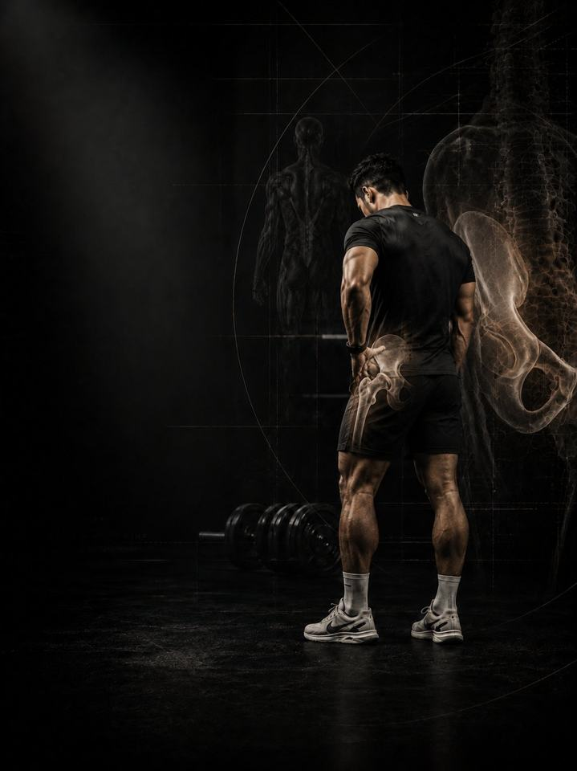

Hip & Groin Pain
Build hip strength in every direction, and give the joint the room it needs to use it.
- Built foranyone with a hip that pinches at the front, aches at the side, or strains at the groin
- Schedulea 10–15 minute daily routine, plus 3 strength days a week
- Equipmentdaily routine needs a mat and a band. Strength days need a full gym.
- Formatmobile PDF, every exercise linked to a demo video
The store opens soon. For now, Buy opens an Instagram message and you receive the PDF there.
Why hip and groin pain keeps coming back
The hip is the strongest joint in the body and the most commonly under-trained. Sitting shortens the front of it, sport loads it hard in one direction, and the muscles on the side and inside, the ones that steady every single step, are almost never trained on purpose. The result is a joint that pinches at the front, aches on the outside, or strains at the groin the moment you ask for speed.
Hip and groin pain is rarely one torn thing. It is usually a joint working near the edge of its range, with muscle that can't control the last few degrees. This program trains the hip in all four directions, and restores the rotation that keeps the joint away from its own end stop.
Your week
A short daily routine, plus three strength days at the gym. Any three days work, as long as they are not back to back. One example:
| Sun | Mon | Tue | Wed | Thu | Fri | Sat |
|---|---|---|---|---|---|---|
| Day 1 + daily routine | Daily routine | Day 2 + daily routine | Daily routine | Day 3 + daily routine | Daily routine | Daily routine |
How it runs:
- Test first. Four tests before week 1, repeated after weeks 3 and 6.
- Daily routine, 10–15 min. Seven movements, every day. On strength days it doubles as the warm-up.
- Strength days. Days 1, 2 and 3, done in order.
The five patterns behind most hip and groin pain
These five patterns share the same fix: strength in the directions you never train, plus enough rotation that the joint stops hitting its end stop. Recognising yourself in three of them is normal. The program trains all five at once, so you don't need a perfect diagnosis to start.
-
Weak side glutes (the hip drops). The pelvis drops on every step because the muscles on the side of the hip can't hold it level. The outside of the hip aches, the low back joins in, and the knee below starts caving. Anything done on one leg shows it first. In the program: Clamshells, Lateral Walks, Hip Airplanes
-
Weak adductors (groin). The groin muscles slow the leg down on every change of direction. Trained rarely and asked often, they strain. Strains recur often, because most people return to sport the moment it stops hurting rather than when it gets strong. In the program: Copenhagen Plank, Adduction Machine, Side Lunge
-
Front of hip pinch. A sharp block at the front of the hip at the bottom of a squat, or with the knee to the chest. The joint is running out of room, and forcing depth through it only irritates the tissue at the rim of the socket. In the program: 90-90 Isometrics, Quadruped Hip CARs, Hip Airplanes
-
Limited inward rotation. If the hip can't rotate inward, the pelvis and low back rotate instead. Pivoting, squatting and even walking borrow range from the spine, which is how a hip problem becomes a back problem. In the program: 90-90 Flow, Hip CARs, Cossack Squat
-
Overused hip flexors. Sitting keeps the hip flexors short all day, then sport asks them for maximum output. They tire early, grip constantly, and take over from glutes that never get a turn. The front of the hip feels permanently tight. In the program: Hip Flexor Stretch, Glute Bridge, Hip Thrust
Your pattern adds. The PDF lists extra exercises for each pattern. Add the ones for the patterns that sound most like you at the end of each strength day, at 3 sets each.
How the 6 weeks progress
The daily routine stays the same for all six weeks. The strength days move up a level every two weeks.
| Weeks 1–2 | Weeks 3–4 | Weeks 5–6 | |
|---|---|---|---|
| Phase | Control | Build | Integrate |
| Focus | Isolate the quiet muscles | Load the big patterns | Move sideways and on one leg |
| Working sets per week | 54 | 54 | 54 |
Average effort is about 6 out of 10 in weeks 1–4 and 6.3 in weeks 5–6. That scale is RPE, a 1–10 rating of how hard a set feels: 6 leaves about 4 reps in the tank.
The rules that make it work
- The work climbs as the hip earns it. Isolation first, then loaded patterns, then lateral and single-leg work. Each phase lasts two weeks.
- The daily routine is the medicine. The strength days are the training. The routine does not change, so it can do its job every day.
- Keep training. The PDF has swaps for the positions that pinch the front of the hip, so you don't have to stop everything while the hip rebuilds.
- Decisions follow numbers. You retest after weeks 3 and 6.
How you'll measure progress
Four tests before week 1, then again after weeks 3 and 6, recorded on the score sheet in the PDF. They track the things that matter here, such as a Copenhagen plank hold, a groin squeeze test and single-leg balance.
What good progress looks like
- Weeks 1–2: the deep ache settles and balance steadies.
- Weeks 3–4: the Copenhagen time climbs, and the squeeze test stops hurting.
- Weeks 5–6: lateral work and changes of direction stop causing next-day soreness.
If nothing has moved by the week 3 retest, get a professional assessment instead of pushing harder.
Finishing standard at week 6: no pinch at the front of the hip for two straight weeks, a Copenhagen hold past 30 seconds a side, squeeze-test pain of 0–2/10 at full effort and lower than at your first test, and single-leg balance held for 30 seconds with the pelvis level.
Get out of the chair
Stand up every 45 minutes, and walk 20–30 minutes on most days. The hip flexors shorten under a chair faster than any stretch reverses them, and walking is the cheapest way to load the hip in the direction sitting takes away. Protect the two free painkillers as well: 7–9 hours of sleep and managed stress.
The science
Every program in the library is built on published research, and how strong that research is gets stated, not implied. Where the evidence is limited, the page says so.
| Finding | Source | What it does not show |
|---|---|---|
| Strength training cuts sports injuries to under a third of the control rate. Stretching does not reduce them. | Lauersen, Bertelsen & Andersen, British Journal of Sports Medicine 2014. Meta-analysis of 25 randomised trials, 26,610 participants. PMID 24100287 | Risk ratio 0.32 for strength training and 0.96 for stretching. The trials varied a lot, and dose was not standardised. |
| A single adductor exercise, done three times a week in pre-season and once a week in season, cut reported groin problems by 41%. | Harøy et al., British Journal of Sports Medicine 2019. Cluster-randomised trial, 35 teams, 652 male footballers. PMID 29891614 | Odds ratio 0.59. Self-reported problems in semi-professional men's football only. It has not been repeated in women or other sports. |
| Every sensible prescription beats not training. Heavier loads rank highest for strength. | Currier, McLeod, Banfield et al., British Journal of Sports Medicine 2023. Network meta-analysis, 178 strength and 119 hypertrophy studies. PMID 37414459 | The differences between prescriptions were small, and all of them worked. |
| Strength keeps improving as weekly sets rise, with diminishing returns. Training more often reliably helps strength. | Pelland, Remmert, Robinson, Hinson & Zourdos, Sports Medicine 2025. Meta-regressions, 67 studies, 2,058 participants (79% male). PMID 41343037 | How sets were counted (direct or indirect) changes the numbers considerably. |
What's next
After 6 weeks:
- The low back still complains: Lower Back Pain
- Build strength and muscle: Foundation Strength
- Train like an athlete: Athletic Development
- Another area needs work: the Corrective series
Before you buy: get cleared first if
- You have chest pain, unusual breathlessness, palpitations or dizziness with exertion.
- You have uncontrolled high blood pressure, a known heart condition, or recent surgery.
- You are pregnant or recently post-partum. Get clearance and a tailored program first.
- Your pain started with a specific injury (a pop, the joint giving way, or swelling within hours), or you have numbness, weakness, fever or pain that wakes you at night.
This program is general fitness guidance. It does not replace a medical assessment.
The store opens soon. For now, Buy opens an Instagram message and you receive the PDF there.